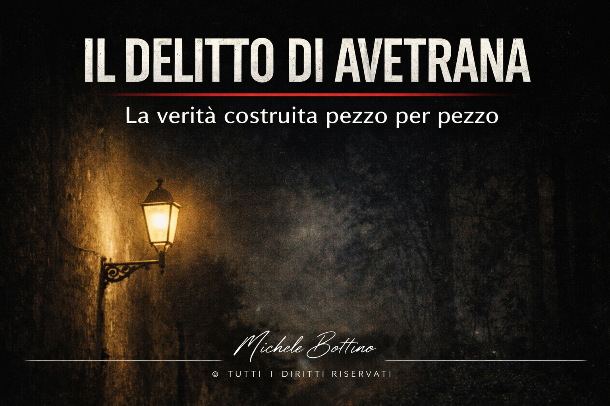
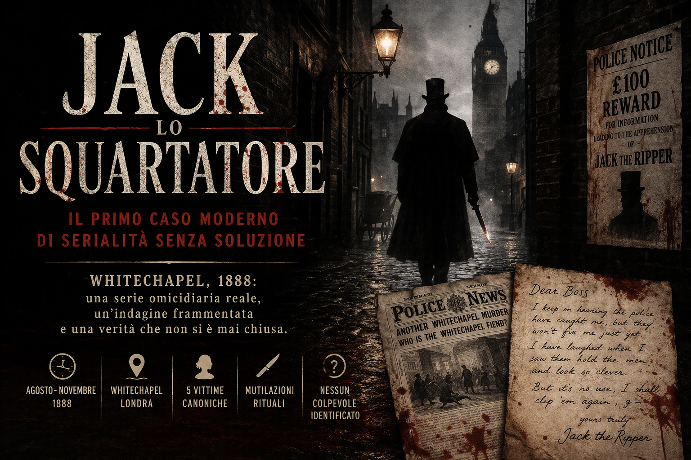
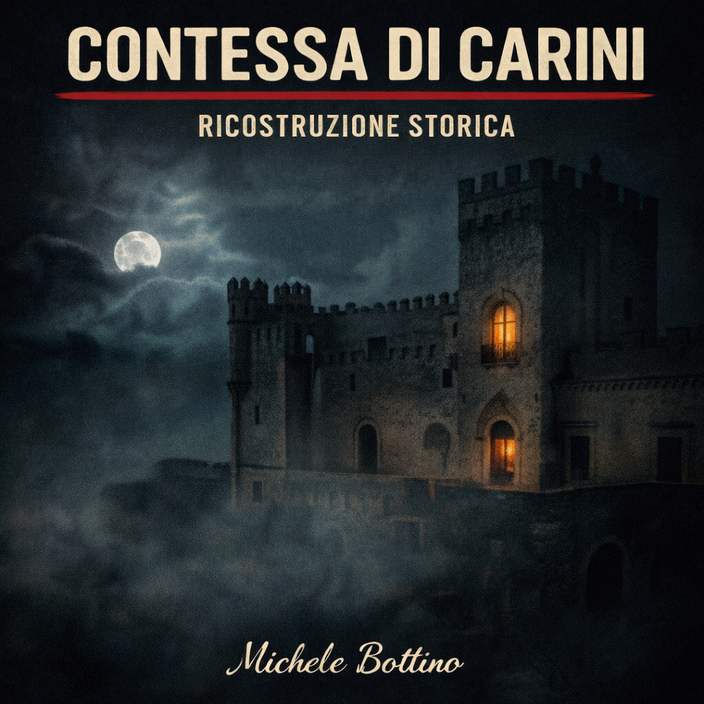
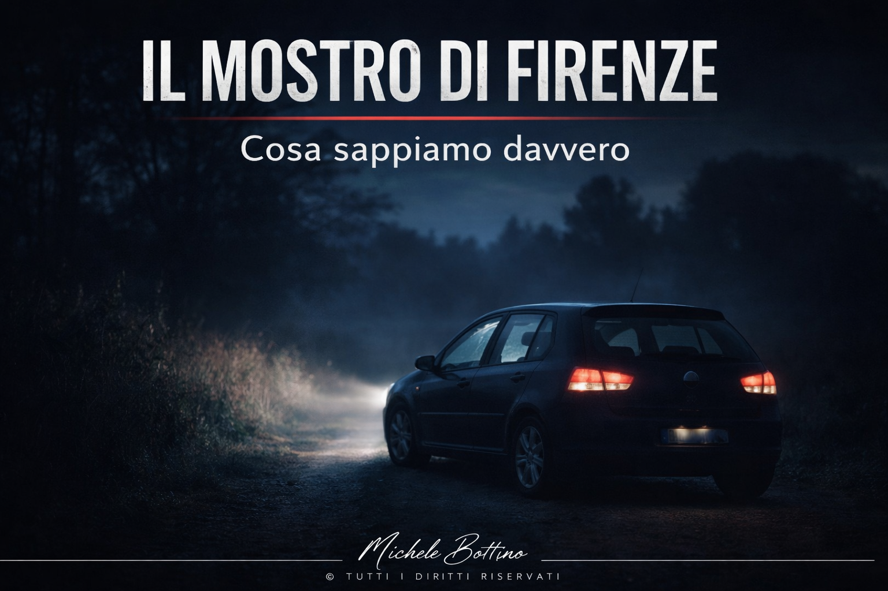
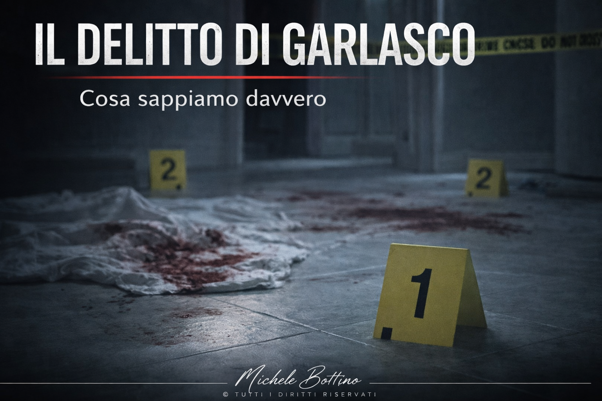
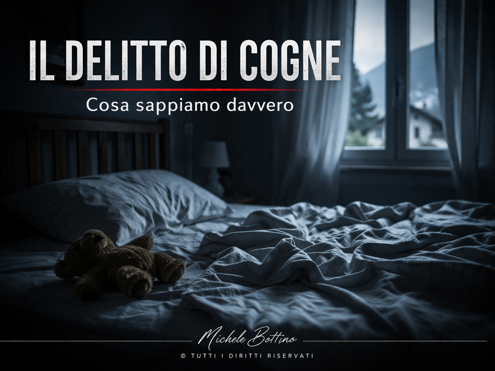
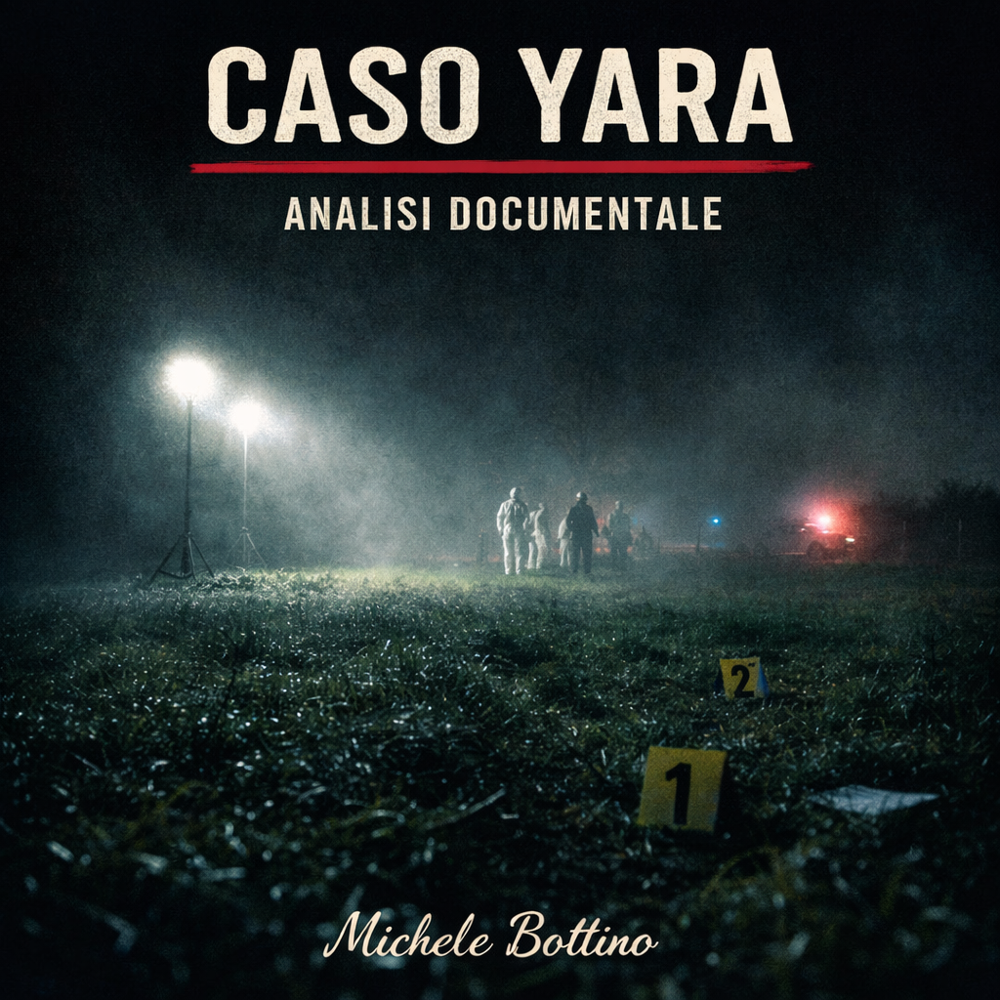
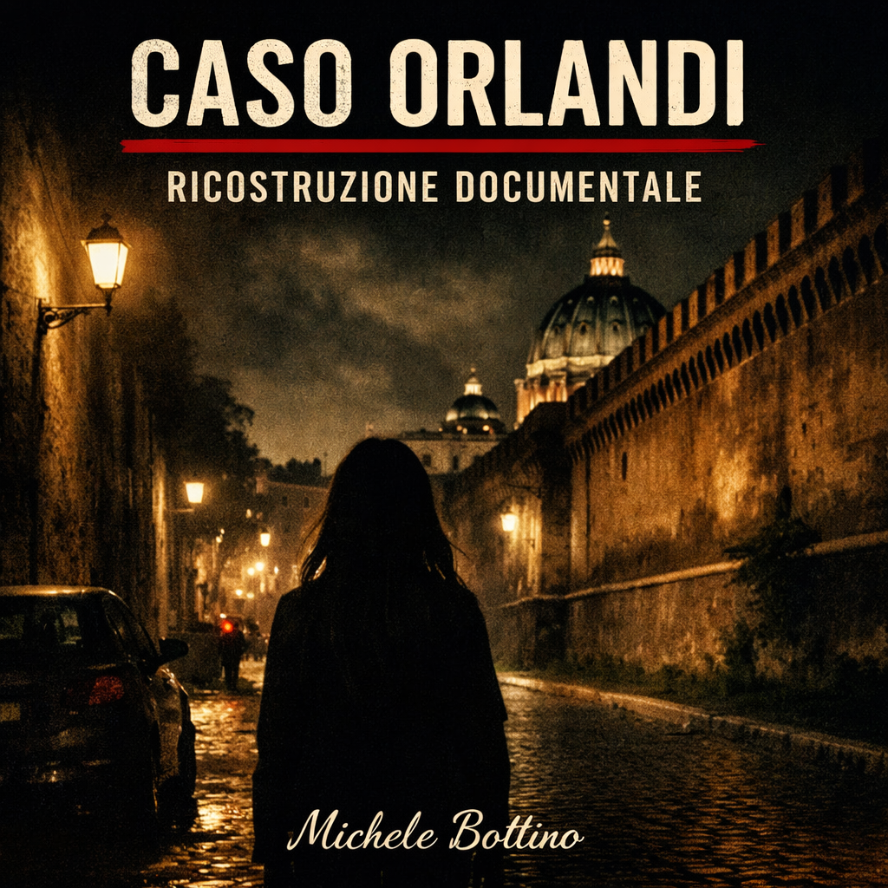

Caso reale
Il delitto di Avetrana
La verità costruita pezzo per pezzo.
Tag: Sarah Scazzi, Sabrina Misseri, Cosima Serrano
Leggi l’articolo
Questa sezione raccoglie casi reali e casi storici pubblicati sul sito. Ogni articolo segue una struttura editoriale stabile, con distinzione tra quadro del caso, aggiornamenti successivi e nota metodologica.

Whitechapel, 1888: una serie omicidiaria reale, un’indagine frammentata e una verità che non si è mai chiusa.

La verità costruita pezzo per pezzo.

Tra documento storico, costruzione narrativa e tradizione popolare.

Tra evidenza tecnica, giudicato parziale, nuove istanze e persistenza narrativa.

Tra giudicato definitivo, quadro indiziario e nuova fase investigativa.

Cosa sappiamo davvero e cosa non sapremo mai.

La centralità della prova scientifica e i limiti della ricostruzione.

Una scomparsa senza punto di convergenza.

Convergenza giudiziaria e persistenza del conflitto narrativo.

Una struttura aperta tra piste concorrenti e assenza di convergenza.